Saprea
Two platforms rebuilt on one structure
Two years in-house as the digital lead at Saprea, a US non-profit working on childhood sexual abuse: prevention, education, and recovery programmes for survivors. A rebrand was merging three separate platforms into two, and a new visual identity had just landed. Both had to be resolved for an audience that often arrives in the worst week of their life.
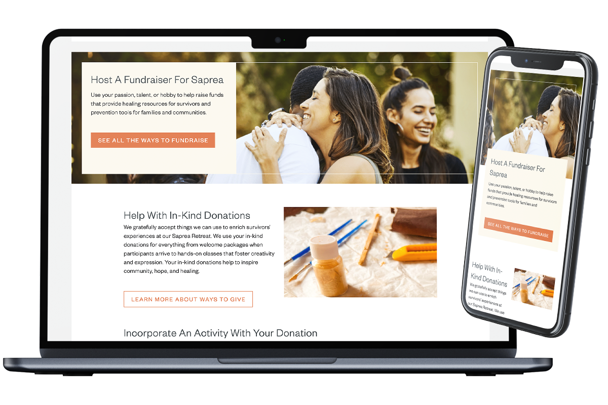
What I want you to take from this project
Three things, if you are deciding whether to talk to me.
I structure before I style
Three platforms, three teams, three ideas of what the organisation was for. The visible problem was navigation. The one worth solving sat upstream of any screen.
I design for readers who arrive with something at stake
Clarity is what keeps someone in the room long enough to ask for help. With this audience it carries more of the interface than any visual choice does, and it is what I built towards.
I make design reasoning usable by people who don't do design
Content, research, translation and management teams each had to act on the same intent, in their own vocabulary. That translation work was half the job, and the half that made the rest hold.
Project context
- Role
- Digital lead inside a creative team led by the creative manager. Research, information architecture, UI, design system foundations for digital, prototyping, copy written with the education and translation teams, photography for both sites, and the internal facilitation that came with all of it.
- Timeline
- 2021 → 2023. Full-time, remote, inside a three-person creative team.
- Team
- A creative manager from a print background, me on digital and cross-media, and a junior designer working across both.
- Tools
- Figma · Hotjar · Stakeholder workshops · Journey mapping
- Surfaces covered
- saprea.org · supportgroups.saprea.org · site copy and photography · research and financial reports · donation, gala and promotional campaigns · printed goods, from bookmarks to books · the materials facilitators use to run a support group · social content
- Production model
- Everything made in-house. The video team filmed the media embedded in the support group resources; copy, art direction and photography for the two sites sat with the creative team.
- Current status
- Both platforms are live and still running on this structure: saprea.org and supportgroups.saprea.org.
The challenge
The organisation ran three platforms: The Younique Foundation as the public face, Defend Innocence for educational resources, Support Groups for creating and joining a group. Three services, three teams, and three navigation logics grown apart over the years. The February 2022 rebrand merged Defend Innocence into the main site, taking three platforms to two, and left the real question open: what the merged site is now for, and how someone crosses the seam that remains. Behavioural data answered part of it. The heaviest drop-off sat exactly at the handover from educational content to programme enrolment, where a person who has decided to ask for help has to learn the organisation a second time.
The rebrand also delivered a finished visual identity with general guidelines for its use, leaving a wide margin on specific applications: a screen, a research report, a gala campaign, the printed material a facilitator hands out in a support group. Translating it surface by surface was the creative team's work, my manager leading on print where it was her craft, me on digital and on the interaction patterns, both of us holding the two sides to each other. The audience set the standard for all of it — survivors, families and professionals are served by the quiet register, and clarity was the brief itself.
Research
Start inside the organisation. Workshops with the content, programme and translation teams, before touching a single screen. Each had spent years serving one of the three platforms, and each held a different model of what the organisation was for. The fragmentation users met had existed internally first, and the rebrand carried it forward.
Then watch what people actually do. Heatmaps and session recordings via Hotjar, across both platforms. People reached the threshold of the journey that mattered most — the move from reading to enrolling — and stopped there.
Then map the whole path. Journeys across both platforms, from first contact with the organisation to active enrolment in a programme, with every point where the existing structure worked against that path marked before any wireframe.
And look sideways. Organisations working on adjacent subjects, read for how they sequence difficult content rather than for their visual language.
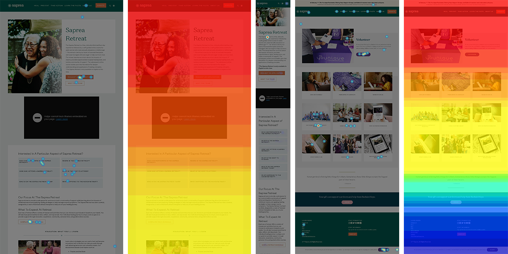
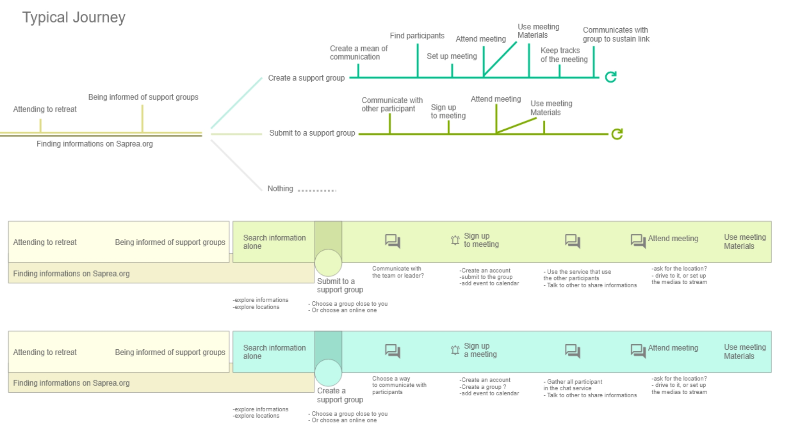
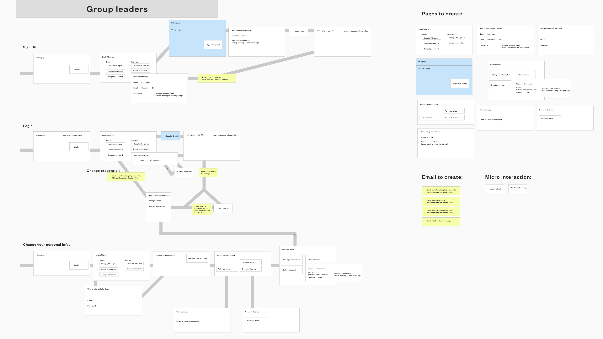
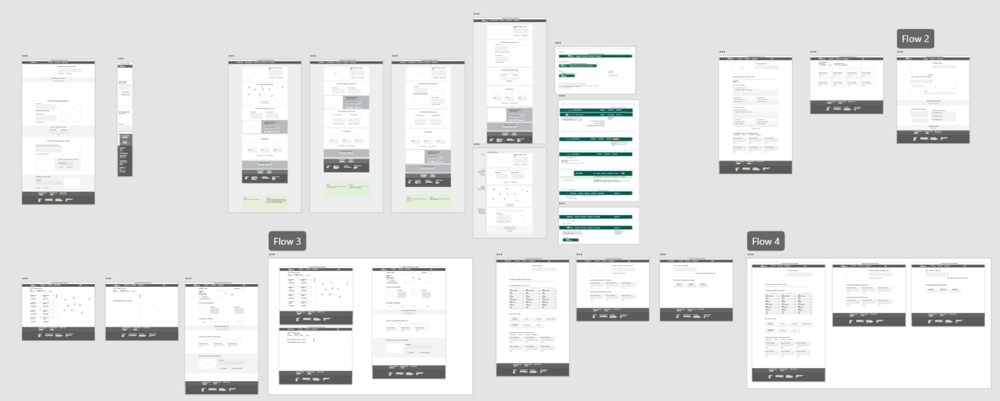
Design decisions
Four decisions, each one with what it asked in return.
One mental model across two platforms
saprea.org and the Support Groups platform were rebuilt on a shared information architecture: the same hierarchy, the same naming, the same rule for where a piece of content belongs. Someone arriving through any door can tell where they are, what the place offers, and how to reach what concerns them, carrying their bearings with them across the seam.
What it asked: the two platforms move as one system now. Every later change is settled jointly, by teams that used to decide on their own.
Sequenced access to heavy content
The route from educational material to support resources was built as a progression. Some content lands differently depending on what precedes it, and the order in which someone meets it is part of what makes it usable. The architecture carries that order: deliberate steps, each one preparing the next.
What it asked: accepting that the shortest path is rarely the right one here. A visitor who already knows what they came for travels a few steps further, and the progression is what makes the destination safe to reach.
A system the team could run without me
The brand translation work produced design system foundations: type, colour, spacing, interaction patterns, and the rules for applying them on screen. I owned the digital side and kept it aligned with the print rules my manager held, so the same identity read the same way in both. The team set the shape of it. A creative manager coming from print, a junior profile, and production workflows where a designer was often out of the room meant the system had to be usable from memory.
What it asked: simplicity ahead of completeness. The foundations cover the decisions that repeat and leave the rest to judgement, which is what made them survive contact with real production.
Explaining the same decision four different ways
Research teams needed to see the journeys their content would sit in. Translation teams needed to see how interface copy carried weight at the hardest moments. The junior designer needed the reasoning, not the file. Managers needed to validate choices that were not self-evident on their own. Same intent, four framings, four separate conversations.
What it asked: a real share of my time, spent in rooms rather than in Figma. It is what made the decisions outlive the handoff.
Photography made in the room rather than licensed
Stock libraries hold a narrow repertoire for this subject, and most of it depicts survivors in the same few postures of distress. Producing the photography in-house kept the question of how people are shown inside the design work, where it could be answered alongside the copy and the page rather than picked from a search result.
What it asked: a narrower image library — fewer photographs than a stock search would offer, each one produced and chosen to say exactly what the page needed to say.
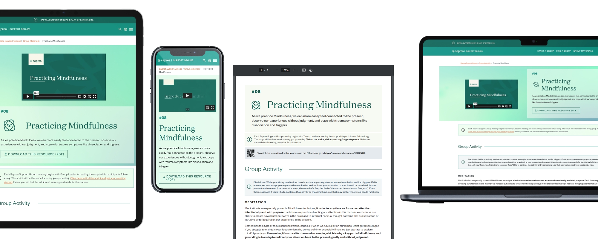
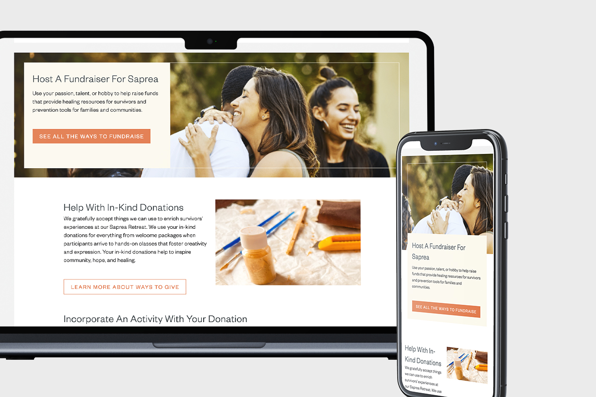
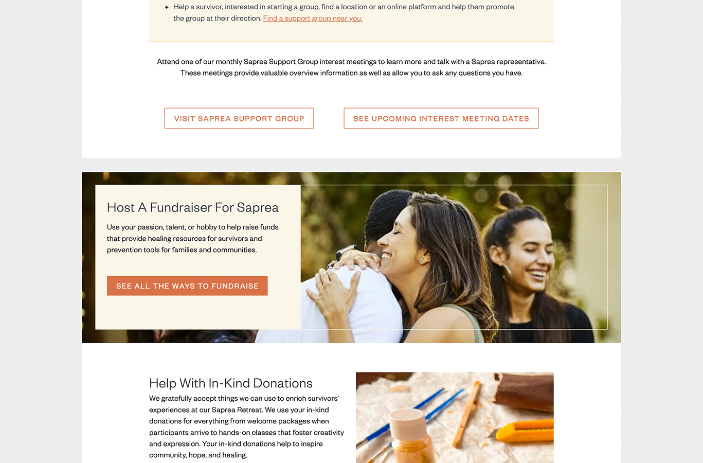
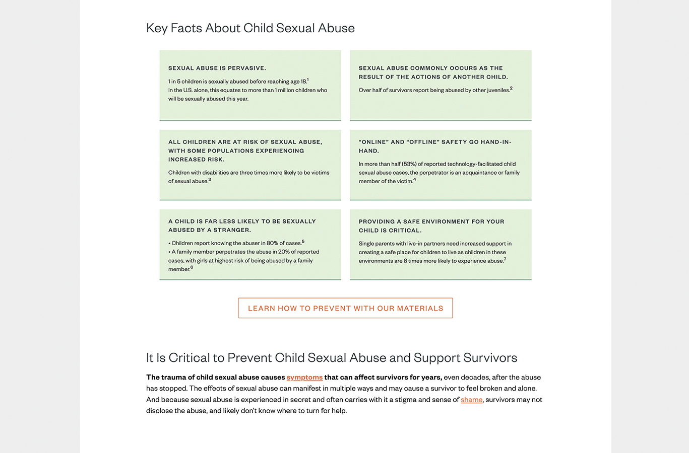
Outcome and reflections
Two platforms came out with a shared navigation logic, consistent interaction patterns, and design foundations that reached past the screens. Dozens of pages were rebuilt across the two sites, and both are still running on that structure today.
On the print side, most pieces stayed bespoke. The foundations set the type, the colour, the spacing and the tone, and each report, campaign or printed piece was composed on top of them rather than poured into a template. For a three-person team that was the right altitude: enough shared ground to keep the identity intact across a gala invitation and a research report, and light enough that three people could keep it alive. Designing across media rather than across pages shaped every decision on this project, because a rule earns its place only when it holds the same way in Figma and in print.
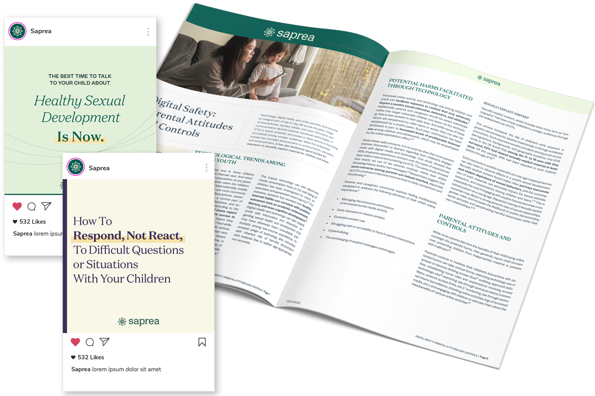
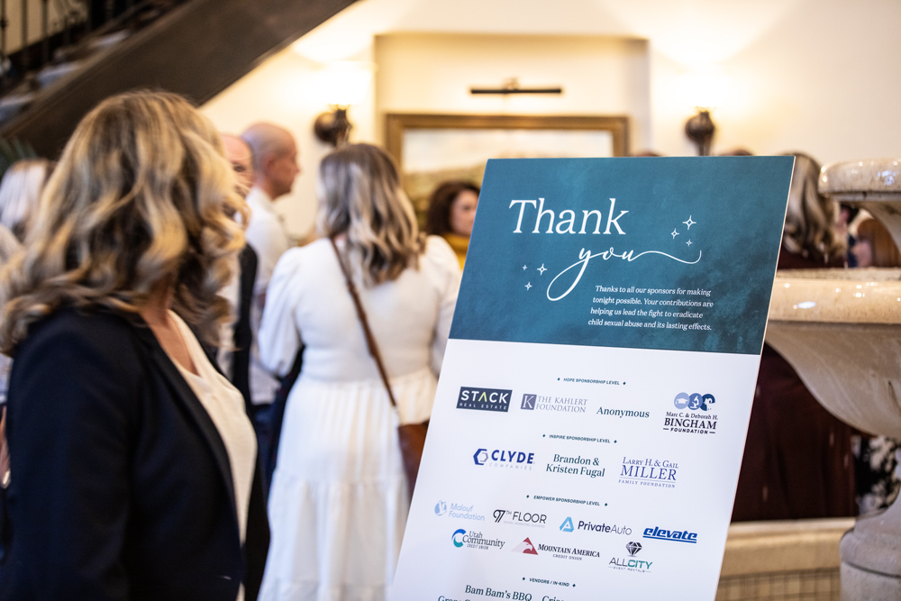
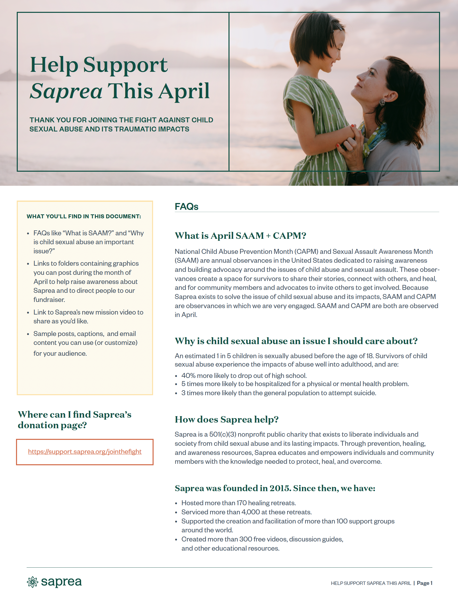
Working this way put the whole chain in one pair of hands: copy written with the education, translation and video teams, art direction of both sites, and the photography that fills them. Shooting the images for a page I had designed meant the two arrived already fitted to each other.
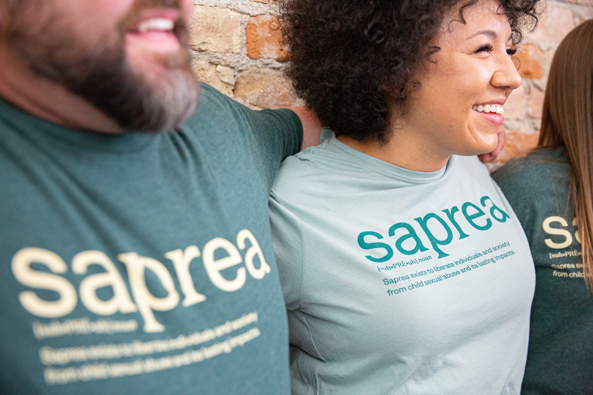
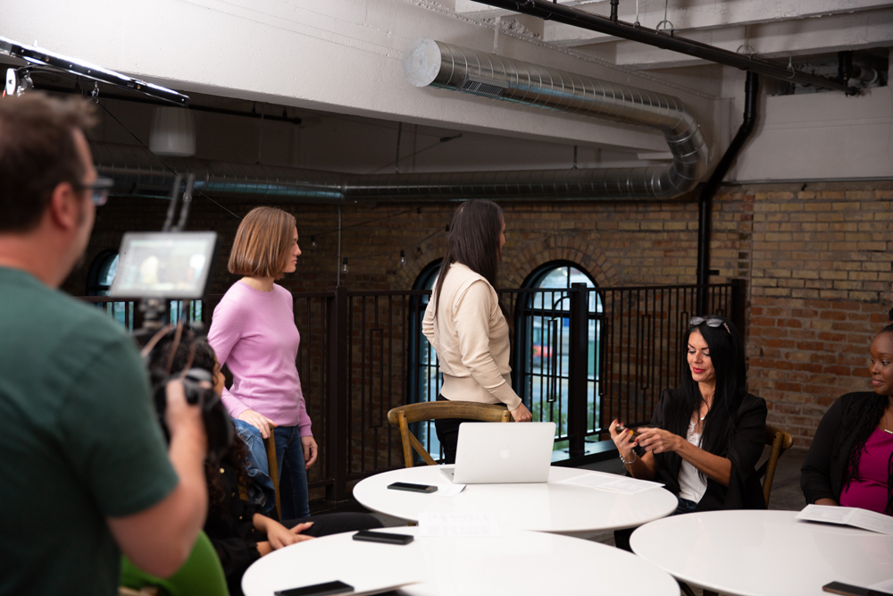
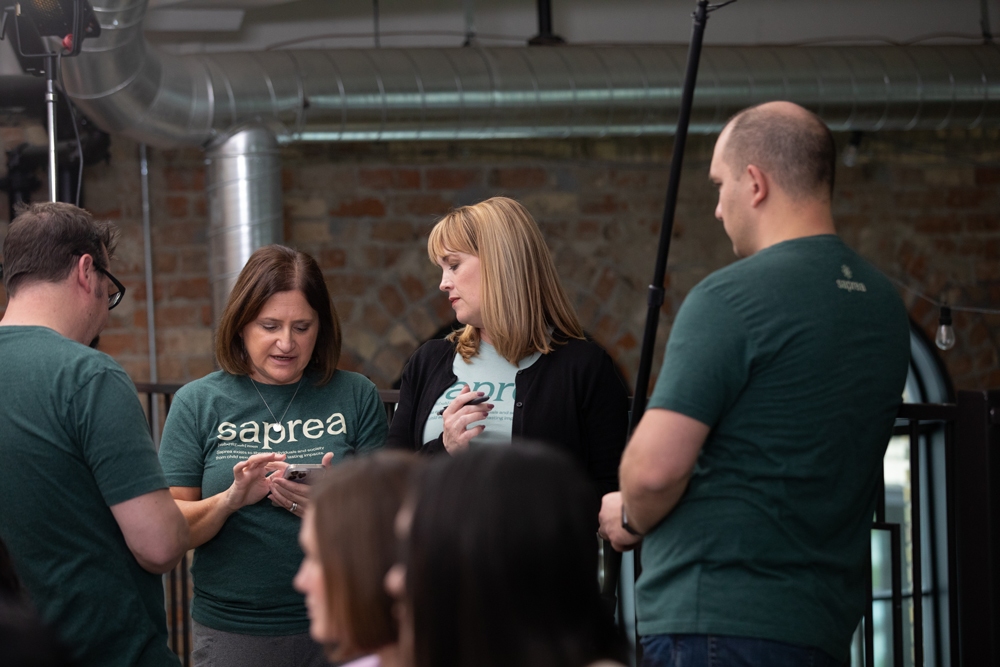
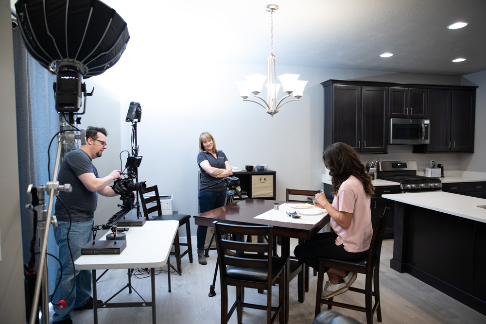
An information architecture is a negotiation between teams before it is a sitemap. The structure users met was the shape of an internal disagreement, and the fix ran through the organisation as much as through the screens.
Designing for someone in a fragile state puts the whole weight on order, wording and restraint. I had been treating those as hygiene rather than as technique, and I have used them as technique on every project since.
Getting design reasoning understood by people who do not share the vocabulary is a skill in itself, and it is rarely named as one. It decides whether a system is delivered or used.
What I would do differentlyI would change how the work met the translation teams. Their feedback reached me once pages and graphic production were already under way, which sent me back into layouts to accommodate copy that had moved. The content needed to be settled earlier, during design, with the translation teams in the room at that stage rather than downstream of it. Every project since starts with the same question: who has to sign off on the words, and when.
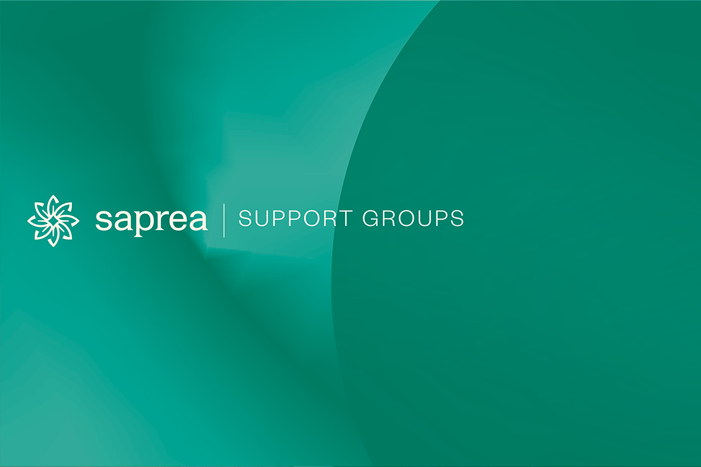
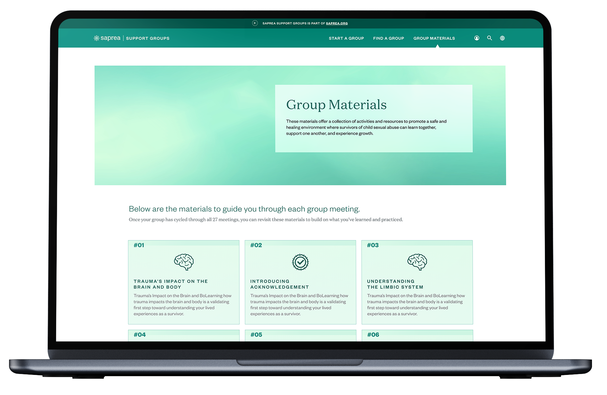